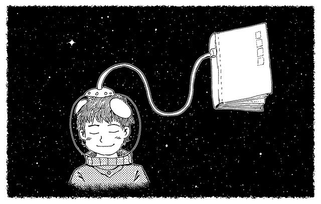
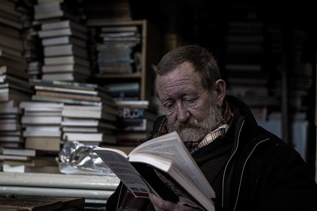

Livro é necessário na luta contra a desigualdade
postado em 28 de abril de 2021 Presidente da Livraria da Vila rechaça plano do governo de retirar isenção de impostos para livros e conta como a rede tem sobrevivido na pandemia. Ele percebe o interesse e a importância da formação de leitores e futuros escritores em todas as classes. Não corresponde à realidade dizer que pessoas de baixa renda.
Leia MaisLivros sob ameaça
postado em 27 de abril de 2021 Por atuar no mercado de livros didáticos, eu me preparei para escrever sobre o Dia Mundial da Educação, comemorado em 28 de abril. Mas foi preciso repensar o texto diante da posição da Receita Federal sobre a quebra da imunidade tributária do livro.
Leia MaisQuantos livros você lê por mês?
postado em 27 de abril de 2021
Por meio de alguma rede social que o escritor Miguel Sanches Neto me disse: só podemos ler de verdade o livro que desejamos, de fato, ler. Eu comentava sobre as pilhas de leituras que crescem ao redor e da alegria de ter um tempo sobrando para ler puramente por prazer. Até para defender o meu lado, tendo a não concordar com o Miguel.
Leia MaisNotícias recentes
Pablo Funchal, da xGB, startup especializada em realidade aumentada, defendeu que o livro é um dos setores que mais podem se beneficiar da realidade aumentada.
Leia MaisEm tempos difíceis, de uma crise sanitária sem precedentes, com pessoas passando fome, precisando trocar o gás pela lenha, definitivamente o livro está longe de se tornar um item da “cesta básica” do brasileiro. Está difícil ter acesso até mesmo ao básico arroz e feijão. .
Leia MaisMais de 3,7 milhões de livros foram vendidos em fevereiro deste ano, segundo pesquisa da Nielsen Brasil e do Sindicato Nacional dos Editores de Livros. O número representa um crescimento de 18,69% no volume de exemplares vendidos em comparação com o mesmo período do ano passado.
Leia Mais